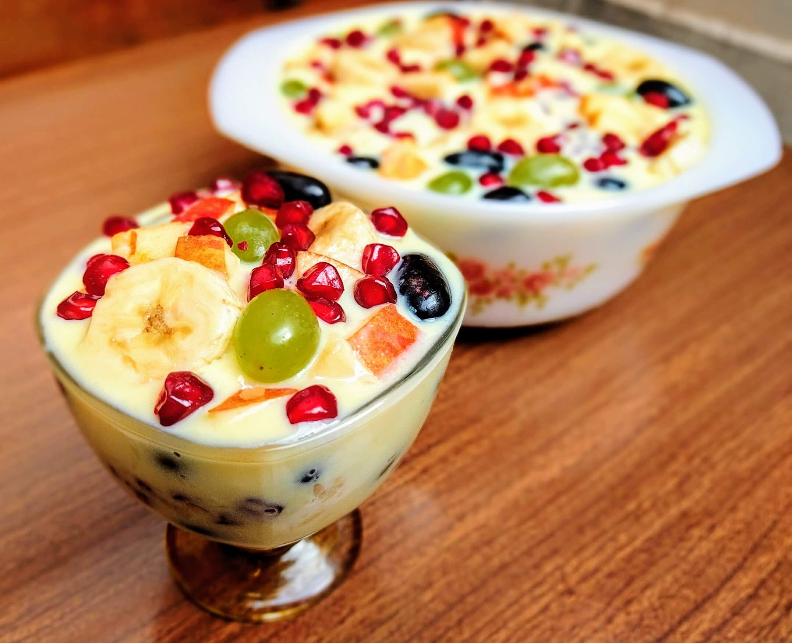

Custard

Description
Custard is a yummy, creamy dessert that's often warm and jiggly. It's made with milk, eggs, sugar, and sometimes flavorings like vanilla. Custard can be enjoyed on its own or with fruit, cookies, or whipped cream.
Ingredients
- 4 cups whole milk
- 1 tablespoon vanilla extract
- 1 teaspoon butter
- 4 eggs
- 1/2 cup white sugar
- 3 tablespoons cornstarch
Steps
- Ask a grown-up to help you with the stove.
- In a saucepan, combine milk, vanilla extract, and butter. Heat over medium heat until simmering.
- In a separate bowl, whisk together eggs, sugar, and cornstarch until smooth.
- Slowly pour the hot milk mixture into the egg mixture, whisking constantly.
- Pour the mixture back into the saucepan and cook over low heat, stirring constantly, until thickened.
- Remove from heat and let cool slightly before serving.
- Tips: For a richer custard, use heavy cream instead of milk. You can add a pinch of salt for extra flavor. Serve warm or chilled with fruit, cookies, or whipped cream.